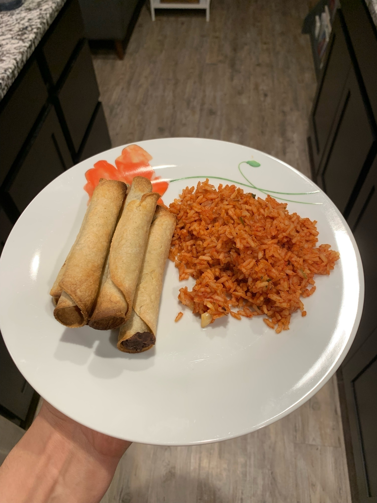
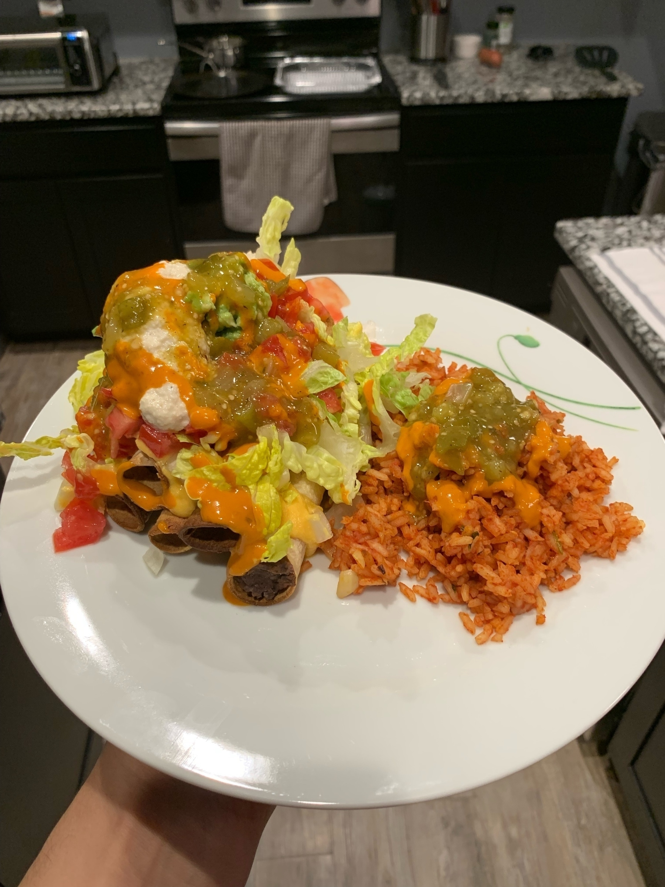
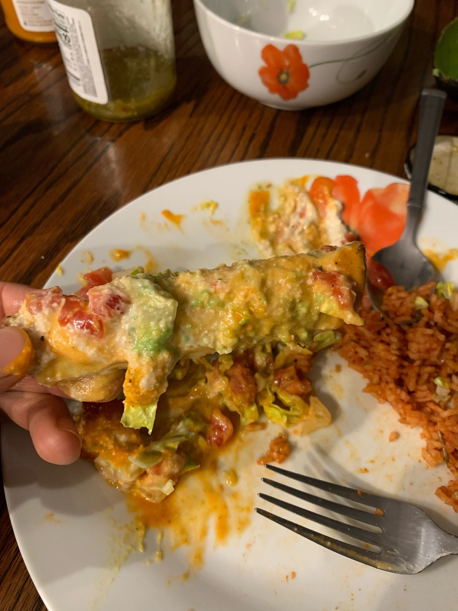
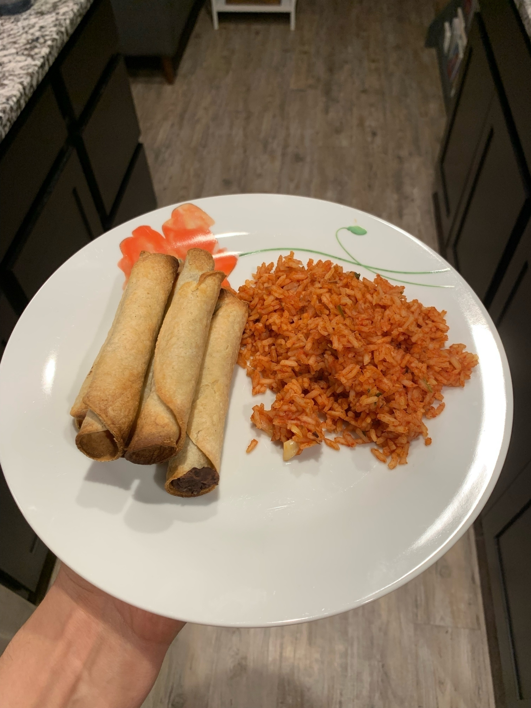
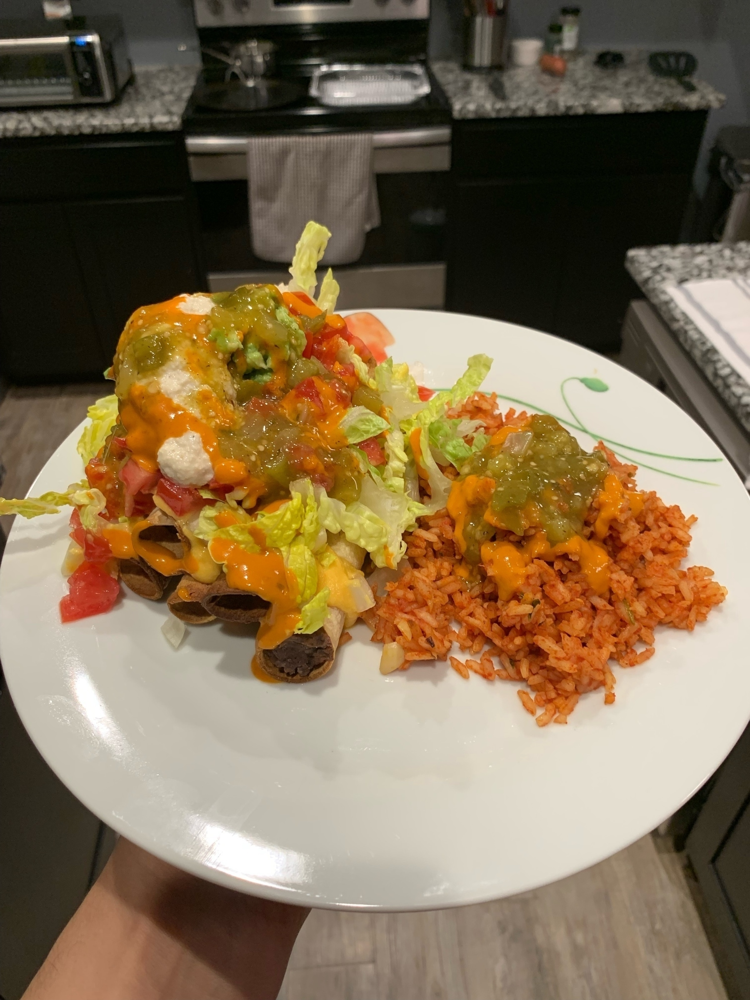
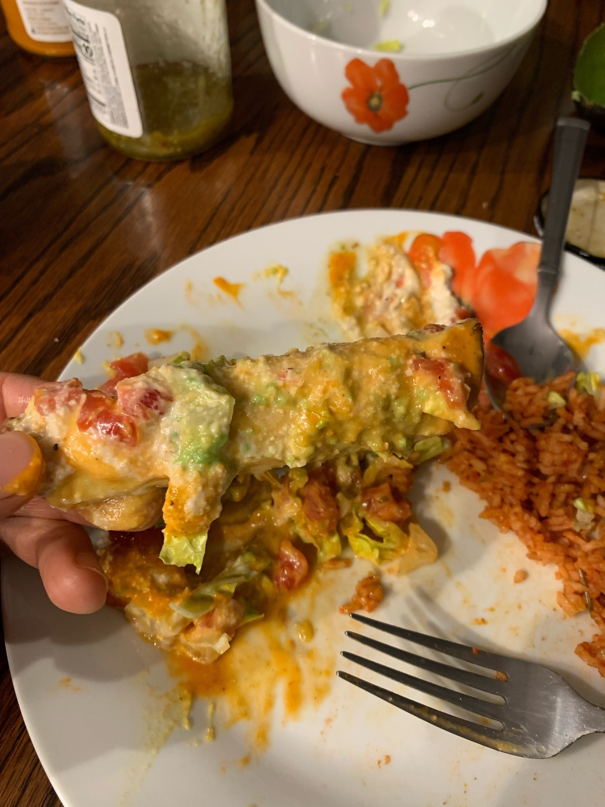
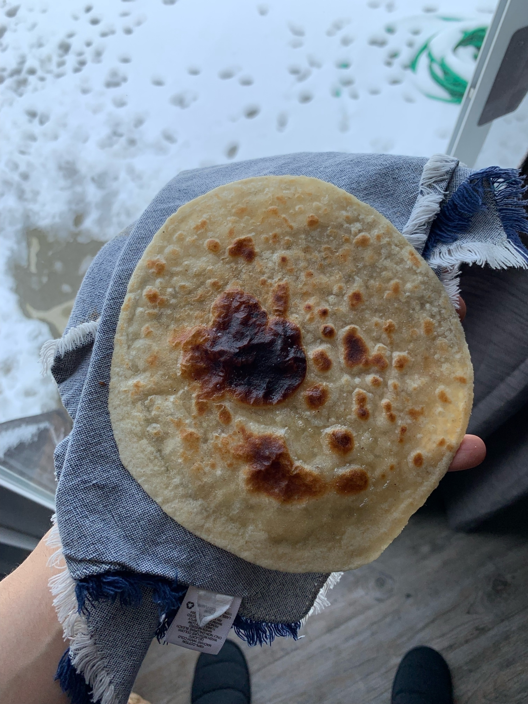
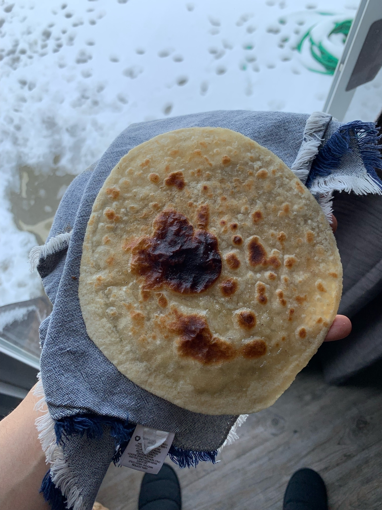
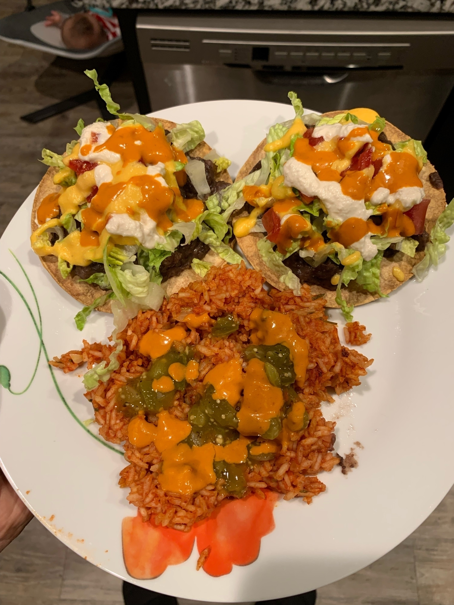

Success! Air fryer rolled tacos! Took me a couple days of trial and error (and tostadas), but we did it. And my wife liked them too. I haven’t had rolled tacos in years so this was quite it nostalgic moment for me.
 

tomato potato cauliflower pea and lentil curry for lunch
Aloo gobi mattar dal tamatar subzi. Potato, cauliflower, pea, lentil, and tomato curry. Adapted from the @veganricha recipe in her book page 87. I made this in the instant pot so had to adapt a little more but came out great. Also made some basmati rice and simmered mustard and cumin seed in oil and cooked that with the rice. Also pictured, roti cooked from dough I bought at the Indian grocery store.
 

tostadas for dinner
Tostadas con frijoles y arroz Mexicano. I intended to make rolled tacos but made my beans too runny so we decided to air fry tortillas to make tostadas. They came out amazing! My wife also made a cheese sauce from @ohsheglows cookbook. As always the rice is @morenita.salazar.k recipe but I’ve adapted it over time to be vegan. The tostadas have beans, lettuce, tomatoes, pickled jalapeños, cheese sauce, salsa verde, @herdezmexico chipotle cremosa (holy shit this stuff is good), and cashew sour cream. These were next level.

What goes into making an OS to be Unix compliant certified? by Terry Lambert
I read his post on NetNewsWire and didn’t realize he actually did link the post but I already typed this so…
Link to Gus’ post. Thanks Gus!
Gus Mueller from Flying Meat software, maker of the amazing graphics editor Acorn and Saint Louisan, posted a very interesting excerpt on his blog about macOS and Unix ceritification. He didn’t link the post and I was very curious so I found it for anyone who cares to read it 🤦🏽‍♂️. Super interesting!!! Warning, it’s on Quora.
Answer to What goes into making an OS to be Unix compliant certified? by Terry Lambert
Yes, cryptocurrencies and NFTs are indeed a scam. www.jessesquires.com
Really cool stop motion video of a milk crate being made
I caught this on the Tom Scott newsletter, but for anyone who hasn’t seen this it’s very interesting. As noted in the video, no CG was used. Just a bunch of photos. And even more time.
What if we were using Mac OS 9 in 2021?
Really cool video from Michael Feeney exploring what it would be like to use the technology of today with the limitations of yesterday. It’s amazing the skills that some people have. Amazingly well done.
I used Mac OS 9 a few times when I was in the 4th or 5th grade, around 2002-2003. I can remember there being a couple iMac G3s in the back of my classroom. I wish I could’ve used it more.
I find this absolutely hilarious. DRM is restricting the DRM creators. mjtsai.com
KFC plant based chicken nuggets are meh
Tried the new Beyond Meat chicken nuggets from KFC because why not. Great breading, but unfortunately they were dense as hell. Another local restaurant, Sybergs, serves the beyond meat chicken tenders and while the breading isn’t as good, they are moist and juicy. It was worth the try and I’d eat if I were stuck in the middle of nowhere, but it’s about on par with the Burger King impossible whopper. Which is to say that non vegans seem to struggle with cooking non meat products.
What a shame because I love that there are more plant based options accessible to people who normally wouldn’t seek that out. I’m hoping this is the beginning and not the end and there is only upside from here because we really shouldn’t be raising animals for food. For many reasons.
🫂 ğŸ“ğŸ„ğŸªğŸ¦¬ğŸ 👠🖠🦌 🦃


Ticket to Ride Local multiplayer with DLC maps
** tl;dr you choose the map on your phone, not on the game console. **
I purchased Ticket to Ride on my PlayStation 4 recently after playing the board game. I wanted to play the expansions as well and particularly in local mode so I could play with my wife. When we first purchased the DLC for the game, it was unclear to us how, if it all, to play the other maps. After spending an hour or so looking into it and reading online we couldn’t find anything so we decided to try to get a refund on the DLC and just play the base game. So sad.
Through some sort of luck, we noticed something when playing the base game again after the refund…
A little background first.
When you start the game and choose local mode, the game asks you to install an app on your mobile device so that you can keep your cards to yourself. Makes sense. What we didn’t realize is that the mobile interface is actually how you choose the maps! ¡Fantástico! In other play modes you choose the map with the controller so we must have missed this earlier.
So like any reasonable person, we bought the DLC again and we were able to play the Europe version of the game! It was so much fun and more challenging than the US map. Highly recommend this game.
Footnote, thanks to Sony for giving us a refund. I also reached out to the company who made the game with the same question and they never got back to me after saying they’d reach out to the engineers. Amazing that no one had this info so hopefully this post will help some other poor soul who just wants to play the train game.
🚞🚊🚂🚆🚄🚅🚃🚇🚝🚋🚈🛤🚉


Why does Xcode 13 not include an Info.plist for SwiftUI projects?
I keep forgetting about this so maybe this will keep it in my mind.
Most important bit, go to project settings and click on info tab
The why
Projects created from several templates no longer require configuration files such as entitlements and Info.plist files. Configure common fields in the target’s Info tab, and build settings in the project editor. These files are added to the project when additional fields are used. (68254857)
Being a parent
Now that my daughter is six months old I feel like I have a better grasp on what being a parent is like.
It’s so interesting how many different opinions there are. As my friend Bill once said, “Nick, you like to live your life on hard mode†and this is no different. Raising a baby without resorting to tv babysitting has been very interesting. Don’t get me wrong, sometimes she sees the tv but we are careful to curtail it as often as it happens. It’s more effort to spend time with her and I’m so happy and fortunate that I have this opportunity.
Being a parent is the most amazing thing I’ve ever done and I’d do it again! If you have the means and desire, I would recommend it. Just make sure you’re ready to change your life for them. Although I think once you meet your child you’ll never have a thought that contradicts that love and care. Even in the challenging moments. Maybe I’m just crazy. Maybe I’m crazy in love. I don’t know everything, but I do like being parent.
Important notes, I’m a reasonably well paid software engineer who gets to work from home and I make enough that my wife can afford to stay home with the baby. I recognize this is not the norm and many likely wouldn’t want to live this way, but I do and I love it. I also recognize (or try to) my privilege
Also I’m aware that I write like a child and this is likely rambling nonsense, but I just wanted to write something about her.
Vegan New York-style meat lovers pizza from Pizza Head in St. Louis, Missouri. This one is made with cashew cheese and it’s amazing. I only wish it was closer. 🍕

My in-laws got a board game called Ticket to Ride for Christmas and it’s really fun and pretty straight forward to play. They also have a digital version so my wife and I have been playing on my PS4. Would highly recommend! 🚂
The New Year is cool and all...
But someone is blowing some sort of kazoo type thing outside and boy is it loud. 🥳👀

Wow, Alexa. Suggesting electrocution as a challege for a child. onefoottsunami.com

My dad tried vegan meat and he liked it.
Spent the weekend down at my dad’s house. It was really nice to be out there and have them visit my daughter. It was also nice to bring down some vegan meats and have them try them. I was worried that they’d be like your typical person and shudder at the idea of it, but they tried the burgers and the sausages. I was surprised how much they enjoyed them. They even said they liked the beyond meat breakfast sausages more than they like regular sausage.
What an amazing weekend.
Pie pumpkins
My wife has been making pumpkin pies lately from the little pie pumpkins you get at the grocery store. Normally we’d buy canned, but thought fresh would be better. I’ve heard the large ones have no flavor really, but assumed the little ones would. And they do, but not as much as you’d think.
I was especially curious why the canned pumpkin was so much darker. After doing a little research I learned that much of canned pumpkin is actually another squash called Dickinson pumpkin. It’s huge and kind of pale orange/yellow.
Maybe everyone knows this, but I was a little surprised. I’ll still continue to purchase pie pumpkins, but now I really want to try a Dickinson pumpkin.
My wife made brownies. Last week.
My wife made the most delicious brownies last weekend. It was our first time making brownies from scratch (and especially from scratch vegan). Turns out the recipe is a ton of chocolate and butter. They turned out amazing and only lasted for days.


Went for a bike ride with my father in law this weekend. Saw this pretty tree. I’m so fortunate that I live in a world where I can fit an amazing camera into my pocket comfortably.


Early morning shot from my new house. The sun was so intense. It created such a beautiful glow on everything.


More places you can debug with a REPL
Debugging by starting a REPL at a breakpoint is fun
This was a really interesting read about debugging using REPLs. Two more to add to the list are:
- .NET using visual studio’s immediate mode (I think that’s what it’s called)
- LLDB in Xcode (and probably outside of Xcode too).
I am a huge proponent of using the debugger statement in JavaScript. Debugging allows you to be able to see something at a moment in time and also inspect and execute other things. It’s like freezing time. I am generally not a fan of print statement debugging, but I recognize that sometimes you have to do what you have to do. 🤷🏽‍♂️

Imposible is now selling tubes of vegan sausage so we made biscuits and gravy. It was amazing! Not pictured is me covering mine with ketchup and hot sauce.


Hans Holbein the Younger
I was on a bit of a Wikipedia spiral (I do this often) and wanted to share something I found. It’s a bit of a windy story, but hopefully you find it interesting and get the bug to read about history.
Â
Yesterday I was reading about a town in England called Blackpool. I thought the name was interesting and was also curious what the ‘pool’ part meant. This led to me reading about bogs. They really are interesting.
I noticed an image of a bog in Ostfriesland. I know that Austria’s name in German is Österreich so I was curious what that word meant.
This led me to an image of a map of northern Germany and all the islands that are just off the coast.
This led me to opening Maps and poking around to see what else was there and I found that there are a ton of islands in that area of the North Sea around the border of Denmark and Germany. Looking at the map I found an island called Helgoland (Helgoland is the German spelling) and decided to look that up.
I read that this island was part of a bight. A word I don’t think I’ve encountered before. Looking up what the German bight was informative and led me to an image of the mouth of the Elbe with an island called Trischen visible. Really beautiful photo shot by Vincent van Zeijst. 
This image led me to the island which led me to the Bay of Meldorf which led me to the Battle of Hemmingstedt (Read about this!!!) which led me to the Kalmar Union which led me to the Hanseatic League which led me to this painting of Georg Giese by Hans Holbein the Younger. I was struck by how realistic this painting was. Reminds me of the Arnolfini Portrait by Jan van Eyck with it’s extreme levels of detail.

Turns out Hans Holbein the Younger painted more than once!
Here’s another one I really liked. This is from 1534!Â

There isn’t much of a point to this post beyond I am very easily drawn to reading things on Wikipedia and this painter was incredibly talented.Â


I got the raccoons out. Spent like ten minutes watching two of them try to scale the edges of the dumpster. I’ve heard the groundskeeper normally lets them out, but I don’t mind helping.

Bit late, but I really don’t understand all the hate for the Apple TV 4 remote. The one with the square touch pad. I almost never accidentally click the touch pad or lose it or anything. I’m sure the new remote is better, but I still don’t understand how there is so much hate.
Never smell an infant's hand
I was discussing with my wife whether we should bathe our baby last night.
I did a quick smell test and she smelled fine.
My wife said that her hands are filthy and she’d need a bath.
I said how filthy could they be, she can’t even grab anything.
I was so wrong.
I was so so so so wrong.
But damn is she cute.
Moral of the story, don’t smell an infant’s hands.
They are filthy.
Though they did smell nice after a good scrubbing.Â


Turns out cherries are a million times easier to pit when you slice them in half as opposed to trying to shove a metal straw into it and push the pit out.


Jumping from 25000 feet without a parachute.
I’ve watched this video and seen this headline a couple times and while it’s definitely impressive, it’s important to note that he’s skydiving into a gigantic net.
Super interesting look into how and why cultures perceive emoji (and other things) differently. The idea that someone can see the same thing has me and come away with a distinctly different feeling and emotion is fascinating.
My first child was born today. I cannot overstate my excitement. Baby is doing well and so is mama. What a day.
Amazing! dronedj.com
Went hunting for mushrooms today. We found four big morels. My wife fried them and they were delicious. I hope I can find some more.


Thinking back to a beautiful Ohio day
I really enjoyed how this photo came out. My wife and I were lucky enough to stay at a house on Lake Erie last summer. Hopefully we’ll be lucky enough to stay there again one day.

Taken with my iPhone XS Max on 2020-06-08 at 21:02:40

{kind=link}
{kind=link}
{kind=link}
{kind=link}
Every Programmer Is Not A Terminal User
I’m always surprised that every programmer isn’t a skilled terminal user. Perhaps it’s because I got into programming after finally being able to purchase a MacBook, but having no idea what to do with it, I searched for “terminal hacks†online and the rest is history.
I very much prefer to use the terminal for lots of tool things like git and basic Unix stuff. I do use a text editor though. Occasionally I’ll use vim but I’m not a magician.
I’ve seen many of my coworkers reach for a graphical git client and for some reason this surprises me over and over. I’m not shaming anyone. Just observing.
I wonder if they are surprised when they see me typing away on that black screen, chaining stuff together?
Working with my brother on his website
I’ve been working with my brother on his photography website for a few years and it’s changed a lot over time.Â
My first iteration was to take all the photos he sent me and make a basic website that displays them, using static html and css.
The next thing I tried was to store them in Firebase and then sort of dynamically pull in the images and import them into the same structure.
Then I learned about react.js and decided that I could try that out and build up his site. That was a pretty interesting experience and I learned a lot.
Unfortunately all of that took a lot of time and required me to basically build a CMS on my own. While I could probably do that, I realized over time that I didn’t want to and furthermore couldn’t devote the time to give him what he wanted. So I made the tough, 😂, decision to make him a SquareSpace website.
I’ve been listening to ads for them in podcasts for years and finally decided it was worth it. Why should I keep him from updating his stuff because I wasn’t feeling the dev process. For the last 4 weekends, I’ve helped him work on the site and I have to say that it’s a great experience.
It’s still the early stages, but I’m glad I had this journey. I learned a lot of web stuff that has made me a better developer and I’ve also learned when to be pragmatic. I’m glad I can help him get his stuff out there and I can still provide technical assistance.Â
Introduction
Hi, I’m Nick.
I’m a software engineer living in Saint Louis, Missouri. I’ve been working in the web space, writing .NET and JavaScript apps for about five years. I’m very interested in iOS and macOS development so that’s what I’ll be talking about and posting here.
I started a blog at nickkaczmarek.com, but I’ll be slowly moving over here. I only have two or three posts there so that shouldn’t be tough.
I hope you all enjoy!